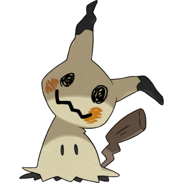
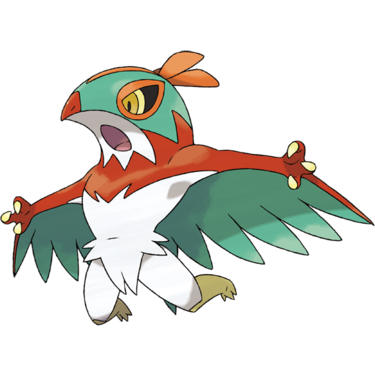

Quick Guide:
- Enter the West Warehouse and find the Kidnapped Man
- Defeat the Kidnappers
- Enter the East Warehouse and defeat the Mad Scientist
- Recover the Electivire
- Sail to East Borrius
Seaport West Warehouse
{kind=link}
| Points of Interest | |
|---|---|
 |
Black Ferrothorn Goon and Burglar Milan |
 |
Kidnapped Man |
 |
Black Ferrothorn Goon and Burglar Colin |
 |
Mimikyu |
 |
Black Ferrothorn Goon and Burglar Hernando |
 |
Black Ferrothorn Goon and Burglar Toby |
| Exits | |
|---|---|
 |
Warehouse Entrance |
Items
| Items | |
|---|---|
| Rare Candy |  |
| Max Elixir | |
| Max Potion | |
Trainers
| Trainers | |
|---|---|
| Black Ferrothorn Goon and Burglar Milan | |
|
Tentacruel Water/Poison (Lv.53) |
 |
|
Ferroseed Grass/Steel (Lv.51) |
 |
|
Alolan Sandshrew Ice/Steel (Lv.51) |
 |
|
Torkoal Fire (Lv.53) |
 |
|
Escavalier Bug/Steel (Lv.53) |
|
| Black Ferrothorn Goon and Burglar Colin | |
|
Wormadam Bug/Steel (Lv.52) |
|
|
Seviper Poison (Lv.52) |
|
|
Pawniard Dark/Steel (Lv.51) |
 |
|
Heatmor Fire (Lv.53) |
 |
|
Ferrothorn Grass/Steel (Lv.53) |
 |
| Black Ferrothorn Goon and Burglar Hernando | |
|
Aggron Steel/Rock (Lv.53) |
 |
|
Charmander Fire (Lv.51) |
|
|
Ferroseed Grass/Steel (Lv.51) |
|
|
Litten Fire (Lv.51) |
 |
| Black Ferrothorn Goon and Burglar Toby | |
|
Steelix Steel/Ground (Lv.53) |
 |
|
Nidorino Poison (Lv.52) |
|
|
Garbodor Poison (Lv.53) |
 |
|
Torracat Fire (Lv.52) |
 |
Picking up where we left off, you’re in the western warehouse in Seaport City on a rescue mission.
The thugs who took him invite you to try and take him back from them, but they’ve got some rules for you to follow – you must enter with a team composed only of Fairy-type and Ice-type Pokémon (double types are allowed).
Why?
Well, it just so happens that the majority of the Pokémon these thugs have are super effective against Ice- or Fairy-types, which means that you’ll be at a severe type disadvantage the whole time.
It’s recommended that you use Alolan Ninetales – hopefully you’ve been training it – as well as double Ice-types from Icy Hole such as Sealeo, Piloswine and Jynx, which might only need a bit of leveling beforehand.
Once Swizer is satisfied you’re following the rules, he allows you to go downstairs to face the goon gauntlet.

Keep going south, passing an intersection along the way – there’s just a Worker there who hears the cry of a Mimikyu.
At the south end of the hallway is a Strength boulder and a narrow passage leading west into the mass of storage containers. Take the passage.
Every fight in here is a Double Battle, and this one is just the first, so make sure you’re prepared.
Once they’ve been defeated, go to the end of the passage and push the boulder out of the way so you can head north.
Note: Be warned that this represents a path of no return, since the boulder resets behind you. You may want to use items to heal up after every single fight, because they’re pretty tough.
You’ll see the landlord to the north – talk to him and he’ll start following behind.
Take the west passage through the containers and you’ll get another Double Battle.
Once these goons are finished with, continue along the passage until you reach the western side of the warehouse.
Follow the path down, and you’ll notice three passages leading east.
Follow the first passage and you’ll find a dead end – and a Pokémon.
You’ll be drawn into a battle with a Mimikyu, and you’ll be able to catch it as well.
| Pokémon Encounter | |
|---|---|
|
Mimikyu Ghost/Fairy (Lv.50) catchable |
 |
If you go along the bottom passage, you’ll be hit with an optional Double Battle. Take the middle passage first if you want to avoid it.
You’ll pass the ambush and head east, straight into a Double Battle you can’t avoid.
Once you defeat that pair of goons, you’re free to make your escape from this floor of this warehouse.
Walk east and you’ll see that you can now push the boulder from the other side, freeing up the way to the entrance.
Kidnapper Showdown
As soon as you go upstairs, Swizer and Bullo are waiting for you.
They’re not happy you managed to get this far, and want to take care of you personally.
| Kidnapper Double Battle | |
|---|---|
| Burglar Swizer and Black Ferrothorn Bullo | |
|
Garbodor Poison (Lv.54) |
|
|
Bastiodon Rock/Steel (Lv.54) |
 |
|
Bisharp Dark/Steel (Lv.53) |
|
|
Hawlucha Fighting/Flying (Lv.52) |
 |
|
Blaziken Fire/Fighting (Lv.54) |
 |
Should you be able to defeat them, they leave with their tails between their legs, and allow you to take the landlord home.
As payment for rescuing him and his Skitty, he tells you that he’ll allow the old man in Epidimy Town to move into the upstairs apartment free of charge.
Fly back to Epidimy Town to give the old man the good news. He heads to his new apartment immediately.
Speak to him in Seaport City and he’ll give you the Icium Z, which upgrades Ice moves to Z-Moves.
If you’ve got that Alolan Ninetales, give it the Icium Z to hold and it will turn into an absolute weapon against Dragon-, Flying-, Grass- and Ground-type Pokémon – and also a lot of other types, considering the power of Subzero Slammer.
There’s one more warehouse you need to investigate, on the docks this time.
Townsfolk have mentioned that they’ve seen a Science Society Scientist go in, and it might be the same one that stole the Electivire.
Seaport East Warehouse

| Points of Interest | |
|---|---|
|
Scientist and Electivire |
| Exits | |
|---|---|
|
Warehouse Entrance |
Items
| Items | |
|---|---|
|
Zygarde Cell (upstairs) |
|
|
Dubious Disc (hidden) |
|
| TM99 Wild Charge | |
| Max Revive | |
You’ll need a password to get in. And by following a tip you can get from a Scientist in town, it’s scrawled on the back of some crates here (screenshotted above).
Enter the password – 5711 – and the door will open.
Make your way downstairs to the storage floor, where the Scientist and the Electivire await.
Walk south until you see a turning to the west – this is the way you need to go.
You’ll see a ladder on the side of a container – take that and it will lead you straight to the Scientist and her mad experiments.
Rescuing the Electivire
The Scientist is apparently pleased you found her, and sets the Electivire on you.
| Electivire Gauntlet | |
|---|---|
| Pokemon Fight | |
|
Electivire Electric (level scales) |
 |
|
Dynamax Pokemon Fight (Double Battle) |
|
|
Dynamax Electivire Electric (level scales) |
|
| Science Society Scientist | |
|
Rotom Electric/Grass (Lv.52) |
|
|
Magnezone Electric/Steel (Lv.53) |
 |
|
Manectric Electric (Lv.54) |
|
|
Vikavolt Bug/Electric (Lv.54) |
 |
Once you beat it, it’s not over – she’s figured out a way to Dynamax it, and you’ll have to fight a Max Battle with the Electivire.
It’ll be a Double Battle, and the three-part shield it throws up at different points is a little frustrating.
If you manage to beat it, the Scientist will square up to you herself and battle you with her team of Pokémon.
Compared to the Dynamax Electivire though, she’s a bit of a pushover.
With its captor finally defeated for good, the Electivire wants to return to its Trainer in Epidimy Town.
Make space in your party when you get there – the Electivire’s happy owner will give you a Pokémon Egg containing a lv. 1 Elekid.
You’ll also get an Electirizer, a Power Weight, and a Gold Bottle Cap.
Sailing to East Borrius
With all the business in Seaport City taken care of, it’s finally time to take that boat ride.
Go to the ferry terminal on the southern pier, near where you picked up the Super Rod.
Jax and Arthur are already here, and apparently there’s engine trouble.
They’re not happy at the inconvenience.
Luckily, the S.S. Marine is also going to East Borrius, and the helpful Sailor at the desk gives the three of you tickets.
Jax hands you one of the tickets and tells you to meet them on the north pier.
Make sure you’ve done everything you can in Seaport City for now, and head to the S.S. Marine – it’s time to go to East Borrius.
It doesn’t take long for the S.S. Marine to reach its destination – the dock at Polder Town.
You arrive at the dock, and Jax and Arthur discuss next steps. You’re interrupted though by an ominous thundering in the distance – Crystal Peak, where Aklove is trying to fire the Ultimate Weapon.
You’ll need Waterfall to even get to Crystal Peak, and that means you’ll need to beat the Polder Gym first.